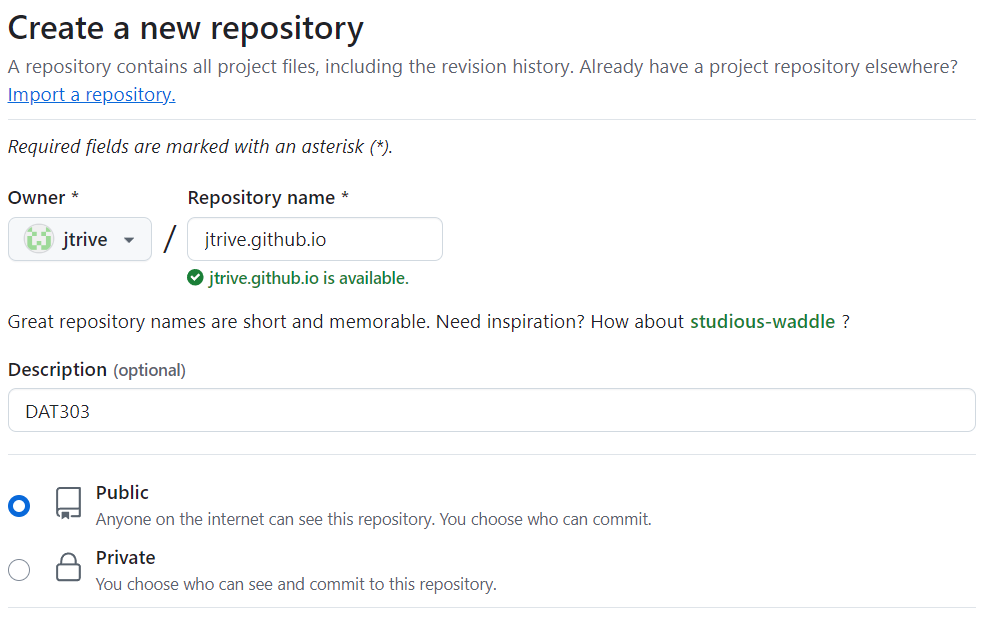
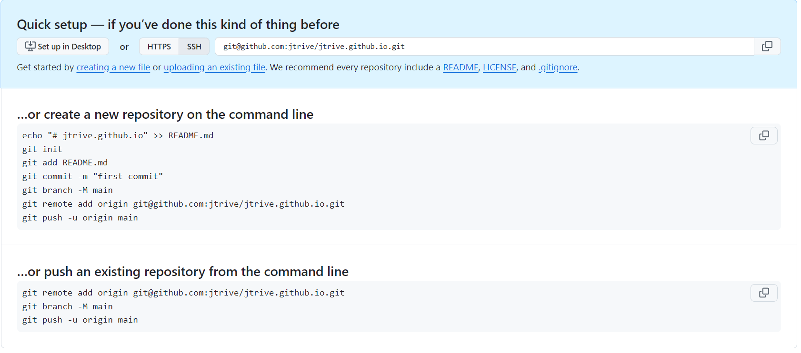
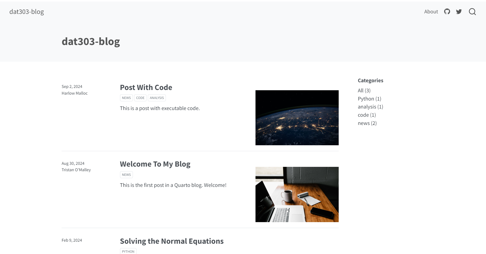
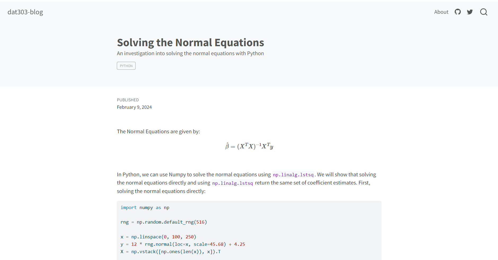

Quarto is a publishing system that allows for the creation of reproducible documents, presentations and websites using both R and Python. Quarto supports Jupyter Notebooks, making it possible to write content in Jupyter notebooks which can then converted to HTML. The static HTML files can be hosted free of charge on GitHub. itHub Pages is a feature provided by GitHub that allows you to host static websites directly from a GitHub repository. In what follows, we walkthrough the setup and configuration of a technical blog managed by Quarto and hosted on GitHub Pages.
Create new Quarto project
Once quarto has been installed, we create a new project using the Quarto CLI. For the purposes of demonstration, we will refer to this as dat303-blog, but you can name it anything (just don’t include whitespace in the name). A folder with that name will be created in the Git client’s current working directory. I like to keep all my repositories in a Repos folder, so I’ll first navigate to Repos using the cd command (note that in the examples that follow, lines starting with # are comments and should not be run. Lines starting with $ represent the command line prompt and should be run from the Git client):
# Switch into desired directory to create dat303-blog folder.
$ cd T:/ReposNext, we run the quarto create-project command, which will create a folder named dat303-blog located at T:/Repos/at303-blog:
$ quarto create-project dat303-blog --type website:blogThis folder will contain a posts folder which will eventually contain our blog content, and a number of additional files:
*_quarto.yaml: Contains the title of our blog, links to our GitHub/social media accounts and styling options. By default, _quarto.yaml* looks like:
# contents of _quarto.yaml. project: type: website website: title: "dat303-blog" navbar: right: - about.qmd - icon: github href: https://github.com/ - icon: twitter href: https://twitter.com format: html: theme: cosmo css: styles.cssThe theme is initially set to “cosmo”. It can be changed to any valid bootswatch theme. The full list of available themes can be found here.
about.qmd: File to provide information about yourself.
profile.jpg: Replace this with a personal photo with the same name (profile.jpg), or update the name of the photo in about.qmd for the image key-value pair.
Create .gitignore
A .gitignore file is used in Git to specify which files or directories should be ignored by Git when you make a commit. This means that any files or directories listed in the .gitignore file won’t be tracked by Git, which is useful for excluding files that are not necessary for version control. From VSCode, create a file named .gitignore and save it to the dat303-blog folder. Add the following lines to the .gitignore:
/.quarto/
/_site/
.*Save your changes.
Initialize Git project in dat303-blog directory
Ensure that the current working directory of the Git client is dat303-blog, then run git init:
$ cd T:/Repos/dat303-blog
$ git initAdding new content
In the posts directory, we will create a new subdirectory for each post. We use all lowercase with words separated by dashes to make it easy to navigate between pages.
For example, I might create a solving-normal-equations directory under posts. Within the directory, I would create a new jupyter notebook named solving-normal-equations.ipynb.
In the very first cell of solving-normal-equations.ipynb, change the cell type to raw (click on the lower right of the cell and change “Python” to “raw”), and add the following header detail:
---
title: Solving the Normal Equations
date: 2024-09-02
description: An investigation into solving the normal equations with Python
categories: [Python]
---Be sure to include the three dashes at the top and bottom of the cell as in the example above.
Populate the remaining cells of your notebook with your inline commentary, code and plots, etc. Be sure to save your changes.
Committing changes locally
Saving our changes with Git is a two-step process: We first stage any changes via git add, then commit them using git commit. Whenever running git commit, you are required to include a commit message, which comes after the -m flag. Assuming the notebook has been saved locally, run:
$ git add --all
$ git commit -m "Added solving-normal-equations article."Creating repository on GitHub
From GitHub, click on the + and select New Repository. In the Repository name field, enter [username].github.io. In this example, it would be jtrive.github.io:

Add a description and be sure to keep the repository Public. Do not add a README or a .gitignore (we already created this). Click on Create Repository.
In the next window, be sure to click on SSH at the top. You’ll see something similar to:

Since we already created our repository locally and committed our first change, we are going to focus on the second box, …or push an existing repository from the command line. Copy the first line starting with git remote add origin ... and paste it into the Git client and hit enter. In my case, it looked like:
$ git remote add origin git@github.com:jtrive/jtrive.github.io.gitDon’t worry about the other two commands: We have to do things a little different since we’re using Quarto.
Create gh-pages branch
Verify that no changes are pending in your blog directory by running git status:
$ git status
On branch master
nothing to commit, working tree cleanWe need to create a separate gh-pages branch to host our blog. Note that this is a one-time action. From the dat303-blog directory, run the following commands (make sure all changes are committed before running this!):
$ git checkout --orphan gh-pages
$ git reset --hard
$ git commit --allow-empty -m "Initializing gh-pages branch."
$ git push origin gh-pagesPublishing content with Quarto
From the Git client, checkout the master branch, then run quarto publish gh-pages:
$ git checkout master
$ quarto publish gh-pagesType Y when prompted:
$ quarto publish gh-pages
? Update site at git@github.com-jtrive:jtrive/jtrive.github.io.git? (Y/n) » YUpon completion, navigate to jtrive.github.io. You’ll see something like:

You can remove the Post With Code and Welcome to My Blog subdirectories under posts to drop those entries. Navigating to Solving the Normal Equations, we see:

Looks pretty good!
Steady-State Workflow
Many of the initial configuration steps are one-time actions. Once you’ve setup your blog as described, the typical workflow will be the following:
Create a new folder in the posts directory, using lowercase letters/numbers with words separated by dashes.
Create a Jupyter notebook in this directory with the same name and .ipynb extension.
Change the first cell of the notebook to raw, and add title information as shown below. Be sure the first and last lines are three dashes,
---:--- title: Solving the Normal Equations date: 2024-02-09 description: An investigation into solving the normal equations with Python categories: [Python] ---Create your blog post (narrative text, code, plots, equations, etc.). Save your changes.
From the Git client, navigate to the blog directory, then add and commit your changes:
$ cd /path/to/blog $ git add --all $ git commit -m "Added second blog post."Ensure master branch is checkout (it should already be), then run the following two commands:
$ git checkout master $ quarto publish gh-pagesView your published content at [username].github.io. If my username is jtrive, my content will be available at jtrive.github.io.